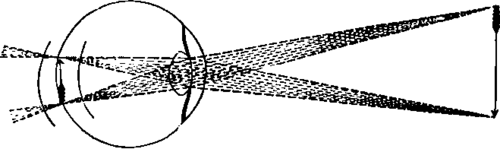

The Eye. Part 2
Description
This section is from the book "Animal Physiology: The Structure And Functions Of The Human Body", by John Cleland. Also available from Amazon: Animal Physiology, the Structure and Functions of the Human Body.
The Eye. Part 2
It being clear that the layer of nerve fibres is not the part of the retina in which the rays of light produce nervous impression, it is curious to observe that the rays have to pierce these fibres and the strata of the retina before reaching the rods and cones on which they act. This shows that the susceptibility to a stimulus so fine as light depends not on the nervous structure but on the peculiar terminal organ added thereto.
176. The most important of the structures through which the rays of light pass on their way to the retina is the crystalline lens. It is comparable with a biconvex lens of glass made by an optician. The rays of light from each visible point in the landscape pass through the whole aperture of the pupil, and are refracted towards one another as they enter the anterior convex surface of the dense substance of the lens, and again as they emerge from its convex surface behind.
They are thus gathered together at a certain distance behind the lens, in a focus situated in the direction of a line proceeding through the centre of that body, from the visible point; and the rays from every point being in like manner refracted, an inverted image of the landscape is produced.
Fig. 122. Diagram to illustrate the course of two cones of light to be focused on the retina, and that distinct vision requires that the focus for the object looked at correspond with the position of the retina.
But there are two sets of conditions required for the production of a correct image on the retina: one is, that all the rays from each spot, and their constituent colours, shall be gathered by the crystalline lens and other refracting media quite to a point; the other, that the position of the retina shall correspond with the focus.
As regards the first of these conditions, it will be remembered, in the first place, that only parabolic surfaces have the property of bringing all the rays from each point to a perfect focus, and that an ordinary glass lens has an imperfection dependent on its spherical curves, termed spherical aberration. The crystalline lens has its surfaces approaching, probably, pretty near to the parabolic form, but it must not be forgotten that it is not the sole refracting medium in the eye. Thus, persons who have had the crystalline lens extracted for the disease called cataract, have still an inverted image thrown on the retina, and continue to see, although imperfectly, without the use of spectacles; thus, also, the curvature of the cornea, when too great, produces short-sightedness, by making the refractive apparatus too powerful. It is, therefore, proper to note that it is a law of spherical aberration, that, while it is exhibited very greatly in the rays which pass through the lateral parts of a lens, it scarcely affects those which fall vertically near its centre; and therefore, the iris, by diminishing the pupil, prevents any such source of error.
Another difficulty in the manufacture of optical instruments is to make them achromatic; that is to say, to prevent the different colours of which white light is made up from being dispersed in passing through lenses, and so producing rainbow colouring in the image. The mechanician meets this difficulty by combining lenses of contrary form and different material, in such a manner that the dispersion of a converging lens is counteracted by the opposite and equal dispersion of a diverging lens of less refracting power. The same expedient is resorted to in the structure of the eye, the light having to pass successively through the cornea, aqueous humour, and the different strata of unequal density in the crystalline lens.
177. With reference to the correspondence of the position of the retina with the focus of the lens, it will be noticed that if that membrane be so placed that the images of distant objects shall be cast on it, it will be too far forward to receive the images of near objects; and, vice versa, if it be so situated as to receive the images of near objects, it will be too far back for those at a distance, unless some arrangement of accommodation be specially brought into play. In a photographer's camera, the focus is arranged for different distances by moving the lens forwards and backwards; in the eye, the same object is attained by change in the form of the lens.
It is easy to make certain that a change of some sort takes place in the eye to accommodate it to different distances. One has only to shut one eye, and hold up a finger a few inches from the other, to perceive that, if the finger be steadily looked at, the background, even at the other end of the room, is quite indistinct; and, as soon as by an effort of the will the sight is fixed on the background, the finger in turn loses all distinctness of outline. But it is more difficult to determine the nature of the change. It has been discovered by careful observation of the reflections from the surfaces of the lens (Helmholtz). When a light is held in front of an eye, three images are reflected; one is from the surface of the cornea; another, of a dim description, is from the anterior surface of the lens; and a third, small and clear, and inverted, is from the hinder surface of the lens. When the focus of the eye is changed from distant to near objects, without altering the direction, the inverted image retains its form and position, while that from the front of the lens becomes smaller, and approaches the corneal image. From this it is known that the posterior surface of the lens remains unchanged, while the anterior surface is made more convex; and by examination of the eye in profile, the lens has even been seen to project through the pupilary aperture when adjusted to short distances. The cause of this change of shape is not thoroughly understood, but the principal agent in effecting it would appear to be the ciliary muscle.
Continue to:
- prev: 174. The Eye
- Table of Contents
- next: The Eye. Part 3